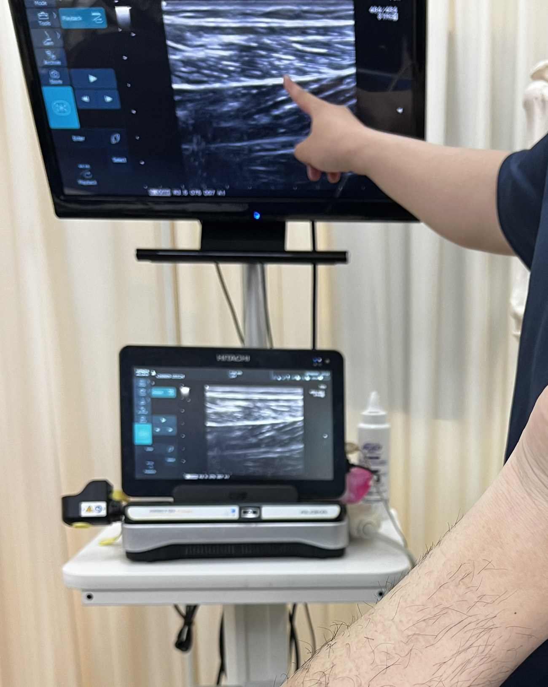
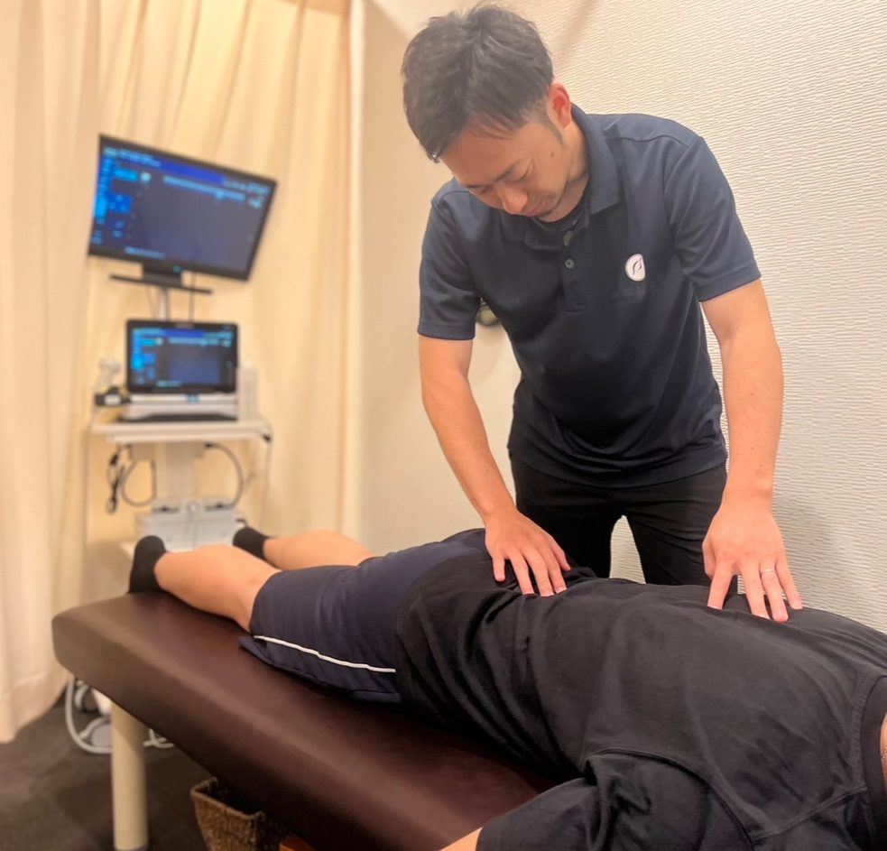

茨木院
- 住所
- ― ※ 既存原稿をそのまま掲載 ―
- 電話
- ― ― ―
- 受付
- ― ― ―

何が原因か
わからない
試合まで
時間がない
病院では
様子を見てと
言われた
同じ痛みを
繰り返している
術後のリハビリが
不安
痛みには、理由がある。
なぜ、痛いのか。
なぜ、繰り返すのか。
なぜ、思うように動けないのか。
痛みの原因は、一つではありません。
筋肉・靭帯・骨・軟骨など
姿勢／動作／呼吸／感覚入力
必要に応じて、エコー観察も行います。

見極めた原因に対して、組み合わせる。
これらを、その人に合わせて組み合わせます。

実感する。
さっきより、動く。
痛みが、違う。
身体が、軽い。
納得する。
なぜ、痛かったのか。
なぜ、変化したのか。
これから、何をすればいいのか。
説明を受けて、理解できる。
必要だから、揃えました。

身体の中を、その場で観る。
微弱電流で、回復を後押しする。
筋肉のはたらきを、整える。
繊細な電流で、深部へ届かせる。
身体のエネルギーを、満たす。

小中学生向け 体幹教室
治療とは独立した、育てるための時間です。


院長
※ 既存原稿（プロフィール文）をそのまま掲載します。

スタッフ
※ 既存原稿（プロフィール文）をそのまま掲載します。

スタッフ
※ 既存原稿（プロフィール文）をそのまま掲載します。

スタッフ
※ 既存原稿（プロフィール文）をそのまま掲載します。